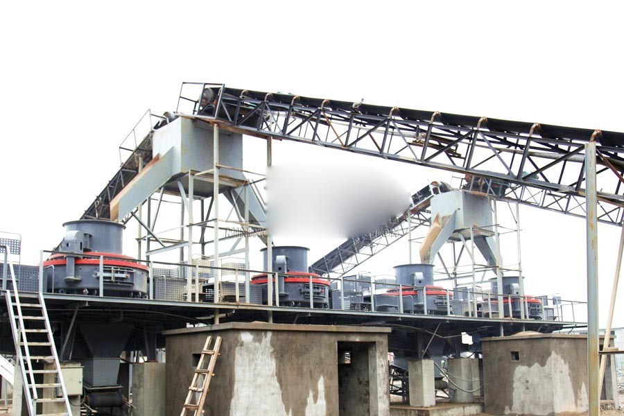

Construction waste crushing production line

Mobile construction waste crushing station for urban construction waste crushing.
river sand making crusher
river sand making crusher. Sand production line, sand making process, a high degree of automation sand production line, almost without manual operation, reasonable design, practical, economical investment. Production design is generally 50-500t / h, model configurations can be combined according to specific process requirements.
Details Sand works and production process, Sand purpose is crushing the material to 5mm size. In the engineering field, sand is sand (artificial sand), cushion material, asphalt concrete and cement concrete aggregate ideal production equipment.

Sand Making Process
CAG Machinery (Sand Making Process) in mineral processing aspects widely used, many customers get more benefits, CAG product also mainly for minerals, rock crusher, mineral grinding, sand stone and mineral processing and other fields. We provide Sand Making Process technical guidance, based on your specific needs, for your rational design of production lines.
Because the tariff is low, you can (Sand Making Process) to save a lot of costs, it can also be purchased to get more benefits, our products and designs for you is really value for money.
river sand making crusher
Artificial Sand gravel aggregate production process in the application materials (limestone, marble, granite) by feeder into the crushing equipment, the aggregate after crushing into the crushing machine for secondary crushing plastic.
We offer you sand making machine equipment mainly used in sand making process plant. ) VSI crusher is used for artificial sand making with high efficiency and low-consumption which is designed depending on several years’ hard working of CAG Group.
Sand making machine plays an important role in crushing minerals into pieces. Widely used in mining, quarry, coal industry, chemical, road and new type building materials, etc.
Features and Advantages of Sang Making Machine
1. Professional design special application for sand making process plant;2. High quality, ISO, CE;3. Large capacity, high crushing ratio, low noise in working time;4. Simple structure, strong technical support.
Specification of Sand Making Machine
|
Model |
B-VSI7611 |
B-VSI8518 |
B-VSI9526 |
B-VSI1140 |
||
|
Capacity(t/h) |
Feed bothat center andat sides |
120-180 |
200-260 |
300-380 |
450-520 |
|
|
Feed at center |
60-90 |
100-130 |
150-190 |
225-260 |
||
|
Max feed size(mm) |
Sofe material |
35 |
40 |
45 |
50 |
|
|
Hard material |
30 |
35 |
40 |
45 |
||
|
Rotation speed (r/min) |
1700-1890 |
1520-1690 |
1360-1510 |
1180-1310 |
||
|
Power(KW) |
110-150 |
180-220 |
264-320 |
400-440 |
||
|
Overall dimensionL*W*H (mm) |
3700*2150*2100 |
4140*2280*2425 |
4560*2447*2778 |
5000*2700*3300 |
||
|
Weight (t) |
7.8 |
10.3 |
16 |
25.6 |
||
|
Power supply |
380V, 50HZ |
|||||
|
Vibrating sensor |
detect range: 0.1-20mm/s continous and adjustable |
|||||
|
Lubricationand hydraulic station |
power |
2*0.31KW |
||||
|
Safety assuance |
CAG oil pumps assure enough oil supply; automatic switch off with no oil stream or hydraulic strength; lower the temperature with cool water in summer; raise the temperature with motor in winter. |
|||||
|
|
|
|
|
|
||
|
Overall demension L*W*H (mm) |
|
820*520*1270 |
820*520*1270 |
|
||
|
Power of oil tank heater |
2KW |
|||||
The new quartz sand production line technology introduction, high quartz automated sand production line, low operating costs, high crushing ratio, energy saving, large output, less pollution, easy maintenance, produce sand meet the national construction sand standards, uniform particle size , grain shape is good, with the management.
Sandstone and sandstone sand specific application process, sandstone sand making process involves crushing and processing, semi-finished raw material storage, semi-finished raw materials screening points, re-screening, dehydration, broken machining, fine machining, ultra-crushing processing system sand sand, sewage treatment and recovery processes.
Leave Me A Message, Now
If you have any questions regarding equipment prices, production line configuration or other problems, you can send a message to us, we will contact you soon.